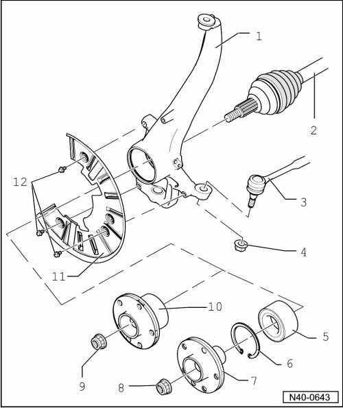

Wheel Bearing Assembly Overview
Wheel Bearing Assembly Overview

1 Wheel bearing housing
• Different versions for 16" and 17", 18" and 18" plus wheels.
• Conical bores must be free of grease and oil.
• If necessary, clean using dry cloth, do not use cleaning agents.
2 Drive axle
• Removing and installing, refer to --> [ Drive Axle Assembly Overview ] Drive Axle Assembly Overview.
• Before assembling, coat splines with assembly paste (G 052 109 A2).
• Clean splines on vehicles with bonded drive axle, degrease and apply locking compound (D 154 000 A1) onto splines, refer to --> [ During start of production, there was a change from bonded to non bonded drive axles. If a bonded drive axle is installed in the vehicle, the following three work steps must be performed additionally: ] Drive Axle.
3 Tie rod
• Conical pin must be free of grease and oil.
• If necessary, clean using dry cloth, do not use cleaning agents.
4 Self locking nut
• M14 x 1.5.
• 90 Nm.
• Always replace after removal.
5 Wheel bearing
• For 17", 18" and 18" plus wheels.
• Removing and installing, refer to --> [ Wheel Hub and Bearing, with 17", 18" and 18" Plus Wheels ] [1][2]Front Suspension.
6 Securing ring
• Check for proper seating.
7 Wheel hub
• For 17", 18" and 18" plus wheels.
• Removing and installing, refer to --> [ Wheel Hub and Bearing, with 17", 18" and 18" Plus Wheels ] [1][2]Front Suspension.
8 Self locking nut
• M24 x 1.5.
• 500 Nm.
• For 17", 18" and 18" plus wheels.
• Always replace after removal.
• Before assembling, coat contact surface with assembly paste (G 052 109 A2)
9 Self-locking nut
• M20 x 1.5
• 200 Nm
• for 16" wheels
• Always replace after removal
• Before assembling, coat contact surface with assembly paste (G 052 109 A2)
10 Wheel hub with wheel bearing
• For 16" wheels.
• Removing and installing, refer to --> [ Wheel Hub with Bearing, with 16" Wheels ] Wheel Hub with Bearing, with 16" Wheels.
11 Cover plate
12 Bolt
• M8 x 12.
• 20 Nm.